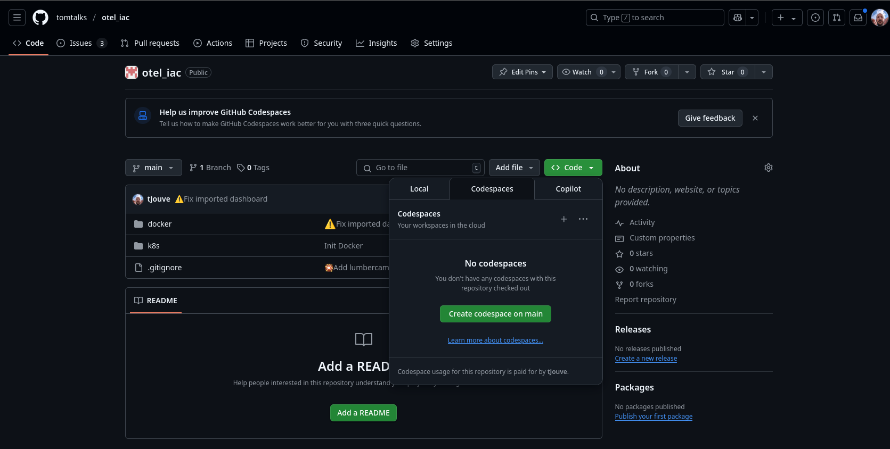

🉠Préparation de l'environnement 🛠ï¸
Estimated time to read: 3 minutes
Choisissez votre terrain de jeu
🏡 En local
Pour démarrer, nous allons installer Docker et lancer le stack Docker Compose préparé pour ce workshop.
1. Installer Docker
Docker est indispensable pour exécuter les différents services de notre workshop.
Si vous avez déjà Docker (et Docker Compose) installé, vous pouvez directement vous rendre à l'étape Cloner le projet.
Sinon, suivez les instructions ci-dessous en fonction de votre système d'exploitation :
🪟 Windows
Attention, pour un usage professionnel, une licence est requise pour Docker Desktop. Si vous n'en avez pas, utilisez WSL.
- Téléchargez Docker Desktop pour Windows.
- Installez Docker Desktop en suivant les étapes de l'assistant.
- Assurez-vous que Docker est en cours d'exécution après l'installation (vérifiez l'icône Docker dans la barre des tâches).
🪟🐧 Windows avec WSL2
- Installez WSL2 et configurez-le comme version par défaut si ce n'est pas encore fait. Suivez ce guide pour l'installation.
- Assurez-vous que votre distribution par défaut utilise WSL2.
- Suivez les instructions pour Linux.
- Dans votre terminal WSL, testez Docker avec :
🍏 MacOS
- Téléchargez Docker Desktop pour Mac.
- Installez l'application en déplaçant Docker dans le dossier Applications.
- Lancez Docker Desktop et vérifiez que Docker fonctionne (l'icône Docker doit être visible dans la barre de menus).
🐧 Linux
Installez Docker via votre gestionnaire de paquets. Par exemple, sur Ubuntu.
2. Installer Docker Compose
Docker Compose est inclus dans Docker Desktop sur Windows et macOS. Pour Linux, installez-le comme suit :
Vérifiez que Docker Compose est installé :
3. Cloner le projet
Récupérez le repository contenant le stack Docker Compose :
On est pret pour 🚀 Lancer la stack Docker Compose☁️ Avec Code Space
Vous pouvez utiliser Code Space sur ce repository 
Docker est Docker Compose sont déjà installés.
On est pret pour 🚀 Lancer la stack Docker Compose
🚀 Lancer la stack Docker Compose
1. Lancer Docker Compose
Dans le répertoire cloné, lancez le stack Docker Compose :
Cette commande va démarrer :
- Une base de données PostgreSQL 🐘
- Un backend Java avec OpenTelemetry ☕
- Trois applications clientes du backend ☕
- Un conteneur Grafana
2. Vérifier que tout fonctionne
Pour vérifier que vos services sont bien lancés, utilisez la commande suivante :
Vous devriez voir tous les services avec l'état Up.
3. Accéder à Grafana
Les identifiants par défaut sont :
- Utilisateur :
admin - Mot de passe :
admin
À la connexion, vous êtes invité à changer le mot de passe de l'utilisateur
Ne le faites pas et cliquez sur le lien Skip en bas de la page.
🏡 En local
Une fois la stack lancée, ouvrez votre navigateur et rendez-vous à l'adresse suivante : http://localhost:3000
☁️ Avec Code space
Si vous utilisez un Code Space, l'url est affichée dans l'onglet Ports.

🚀 Bravo ! Vous êtes prêts à explorer Grafana et à créer vos premiers tableaux de bord !
🛫 Prochaine étape : Introduction à Grafana ➡️